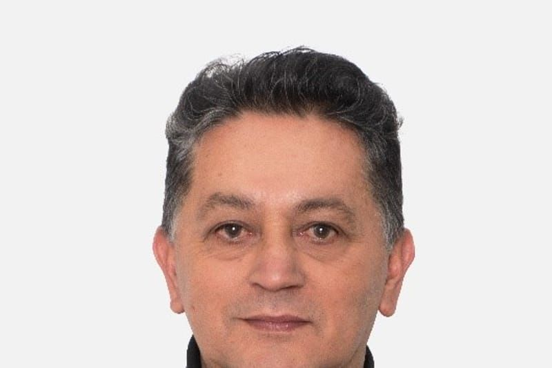

Pedro Pablo Gómez
Es doctor en Estudios Culturales Latinoamericanos por la Universidad Andina Simón Bolívar, sede Ecuador; magíster en Filosofía por la Pontificia Universidad Javeriana y maestro en Bellas Artes por la Universidad Nacional de Colombia. Es docente titular en la Facultad de Artes ASAB de la Universidad Distrital Francisco José de Caldas, en Bogotá, donde ejerce la cátedra en Artes Plásticas y Visuales, en la Maestría y el Doctorado en Estudios Artísticos, y dirige el grupo de investigación «Poiesis XXI». Es docente invitado en varias universidades de Colombia y de América Latina, y ha participado como jurado de tesis de maestría y doctorado en México, Ecuador y Brasil.
Entre sus publicaciones se encuentran los libros El surrealismo: pensamiento del objeto y construcción de mundo; Avatares de la investigación-creación; Arte y etnografía; La investigación en Arte y el Arte como investigación; Estéticas y opción decolonial; Estéticas fronterizas y Reconstitución estética decolonial, este último en coautoría con Walter Mignolo. Su actividad artística incluye curadurías y exposiciones individuales y colectivas. Es director de Calle14, revista de investigación sobre arte, coordinador del Doctorado en Estudios Artísticos y editor de la revista Estudios artísticos: revista de investigación creadora.